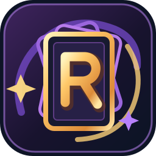

ADVERSAIRE IA0 PV
LEGENDE
CHAMPION
BASE IA
RUNES ACTIVES
MAIN IA
DEFAUSSE
CHAMP DE BATAILLE · JOUEUR
CHAMP DE BATAILLE · IA
TON PLATEAU · CARTES PHYSIQUES0 PV

Joue physiquement à Riftbound contre une IA, comme contre un ami. Ce site sert à afficher et suivre le plateau ; ce n'est pas un jeu en ligne ni une copie numérique autonome.
Projet fan gratuit, non commercial et non affilié à Riot Games. Les joueurs et l'agent restent responsables des règles.
Vérifie la version de ton compagnon avant de lancer la partie.
Un seul fichier Windows à lancer : le plateau et le serveur sont intégrés, sans installation de Node.js.
Télécharge le fichier puis double-clique dessus. Il lance ton serveur privé sur cet ordinateur. Reviens ensuite sur cet onglet pour autoriser la connexion. Aucune installation ni dépendance supplémentaire. Logiciel non signé : Windows peut demander une confirmation.
Le navigateur doit autoriser ce site à communiquer avec l'application installée sur ton propre ordinateur.
Connexion au programme Riftbound Companion, uniquement sur 127.0.0.1.
Le bouton demande l'autorisation uniquement pour ce site et ton programme local. Si tu n'utilises pas le serveur, tu peux continuer en mode aperçu. Un agent distant nécessite toujours un accès séparé et autorisé.
Tu gardes tes cartes en main secrètes. L'IA reçoit un deck préconstruit de démonstration.
Chargement du catalogue…
IA intégrée au compagnon : elle répond directement dans le chat et déplace les cartes, sans tunnel ni prompt.
Il joue directement sur ton ordinateur, sans abonnement, compte, clé API, crédit ni paiement.
Modèle universel : Qwen3 0.6B · environ 639 Mo de téléchargement. Fonctionne sur le processeur, sans carte graphique dédiée ni pilote spécialisé. Le moteur de jeu IA ne pèse qu'environ 25 Mo à télécharger, une seule fois.
Connecte ton programme Windows pour installer l'IA gratuite.
Sans service Chrome : transcription FR/EN sur ton processeur, avec un vocabulaire Riftbound. Tous les fichiers restent dans ton dossier choisi.
Optionnel : Chrome reste utilisable sans Whisper.
Règles de base et de tournoi · Commandes du plateau · Textes des cartes consultés automatiquement.
Consulter le hub officiel des règles et errataLe petit modèle reçoit automatiquement les règles utiles, les commandes du site et les effets des cartes concernées. Le résumé n'est pas un arbitre officiel et les règles compétitives doivent être vérifiées. Ta main physique cachée reste privée.
Tout est déjà inclus dans l'application Windows. Aucun autre logiciel à installer, aucun compte à créer.
En activant l'accès, tu autorises temporairement un agent extérieur à lire et modifier la partie. L'adresse HTTPS est publique, mais les actions exigent une clé distincte et temporaire. Transmets le prompt uniquement en privé à un agent de confiance. L'accès expire sous 4 heures maximum.
Accès distant fermé.
Colle le prompt dans ta conversation privée avec l'IA. Si la copie automatique est bloquée, utilise le bouton ci-dessous.
Un agent sans navigateur ni appels HTTP ne peut pas accéder directement au plateau. Le mode assisté permet d’envoyer l’état public et d’appliquer sa réponse sans console développeur.
Les modifications de partie seront visibles sur le plateau.